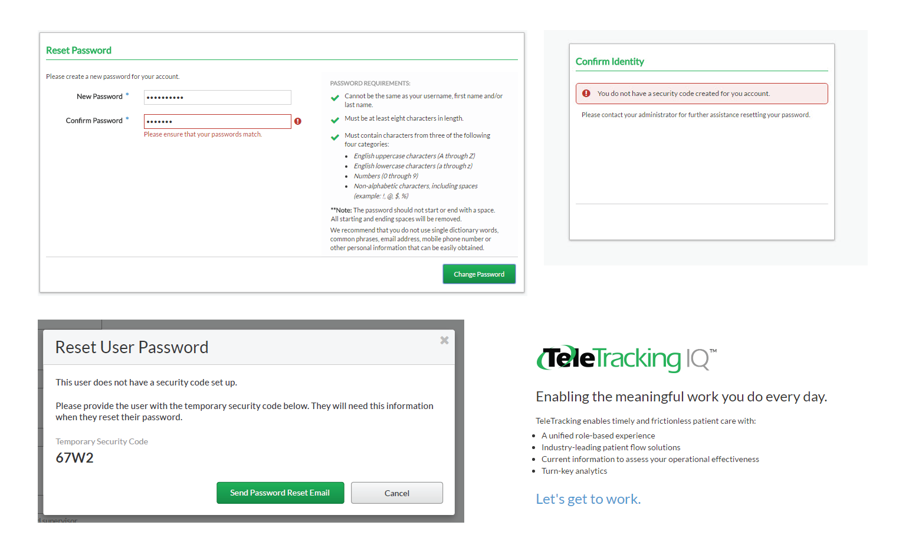

introduction
Mosaic
In summer 2018 I worked as an UI/UX intern at TeleTracking Technologies, a company that makes patient flow software for hospitals. My main project was enhancing the Mosaic design system used within TeleTracking. Mosaic was still in its infancy, which is why I was tasked with researching the undeveloped parts of the design system and fleshing them out. My main deliverable was a style and reference guide used to help the design team deliver consistent product experiences across the whole product suite.
MY ROLE
UI/UX design intern & Illustrator
TEAM
UX intern & UX team
DURATION
12 weeks; Summer 2018
SKILLS
UX Research, Prototyping, Illustration, Animation
TOOLS
Sketch, InVision, Principle, Illustrator
final deliverable
These are the key parts of the design system that I researched, defined, and designed:
- Voice and Tone
- Error Messaging
- Transient States
- Empty States
- Modals
My Process
Initial Research
Why Design Systems
To understand the problem space, I first did a lot of research on design systems and the problems they solve. I reviewed past research done by the design team on the benefits of design systems. I also read Brad Frost’s Atomic Design.
I also looked at different design systems used by other companies to get an idea of what content they covered and how they were organized.
Discovering Pain Points
To find parts of the design system that needed the most work, I conducted interviews with 10 different stakeholders across the company, including representatives from engineering, product management, design, documentation, and QA. Based on how many times each issue came up, I plotted a difficulty-priority matrix to organize the hierarchy of pain points.
Because this resource mainly involved the design team, I conducted many follow up interviews with designers when digging into the specific parts of the design system.
Voice and Tone
Research, Interviews, and Workshops
I first tackled Voice & Tone because a lot of the other important parts of the system depended on voice & tone. One pain point was that messaging written across the platform was not consistent because the UX team doesn’t have a copy writer or any defined standards regarding messaging. Using the testing environments, I looked at the products today and found a lot of inconsistent messaging.
Examples of inconsistent and confusing messaging- what does turn-key analytics even mean? How do I contact my administrator? Why are the password requirements so long? We needed Voice & Tone guidelines to combat the confusing messaging across the platform.
I referenced existing Voice & Tone guides and found that there are a multitude of different scopes that these guides can cover. Some guides go into the very technical details of how to phrase language. I looked at the themes across the different guides and organized them into three categories: Principles, Do’s and Don’ts, and Examples.
I organized the different parts of Voice and Tone guides into three categories
The UX team looked over the examples and talked through which parts were a better fit for what the team needed.
Design Challenges
- Because messaging across the platform was inconsistent, I had to decide which examples to use as exemplars in the design system. I decided through interviewing the team and looking at UX best practices.
- The team had to come to a consensus on voice and tone principles. Anna had already started working on them, but we had to revisit them and get everyone on the same page. I gathered examples of each principle and also held a discussion on which principles to replace or remove.
After I finished the content for the Voice & Tone guide, I moved on to design. I made sketches before transitioning to digital mockups and prototypes, going through many iterations before settling on a final design.
Error Messaging
After Voice and Tone principles were established, I moved on to compile error messaging standards. I made an affinity diagram of different types of errors. Using this diagram, I created a hierarchy to organize errors and also map out the page layout of the error messaging. The primary distinction I used was system versus user error, because that distinction helped guide the tone of the messaging.